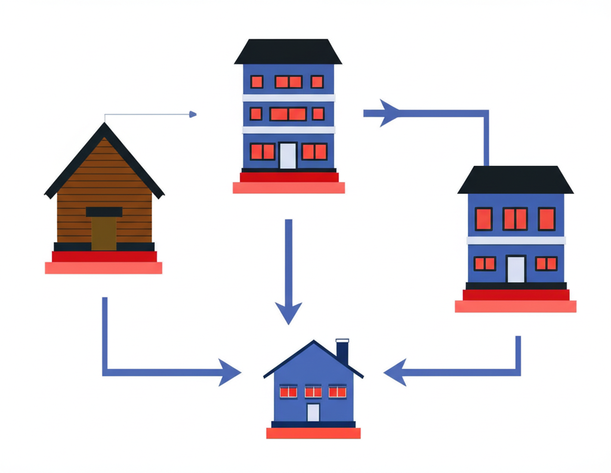
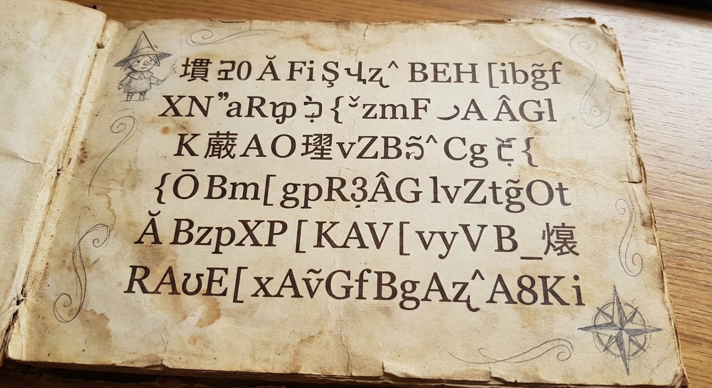
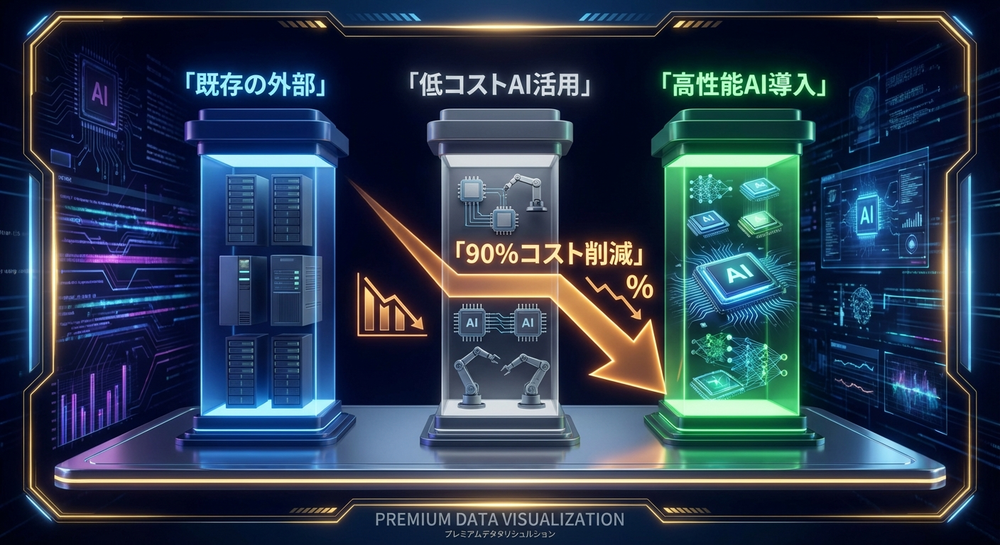
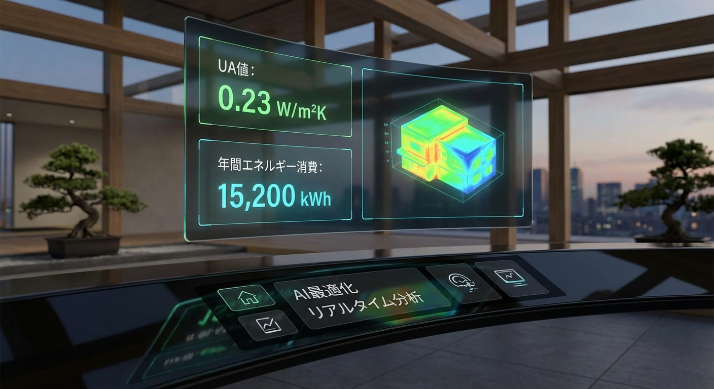
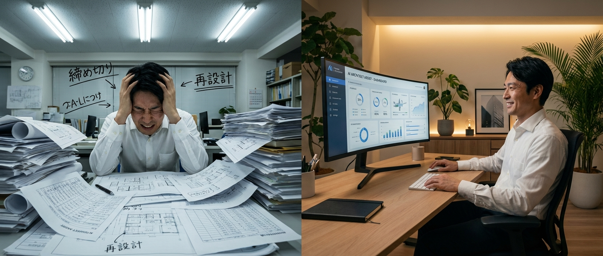

目次
4号特例縮小の全貌と対象範囲
2025年4月の建築基準法改正により、これまで「4号建築物」として構造関係規定の審査が省略されていた木造住宅等について、審査省略の範囲が大幅に縮小されました。
具体的には、従来の4号建築物の区分が廃止され、新2号建築物（木造2階建て以上、延べ面積200m2超など）と新3号建築物（木造平屋・200m2以下）に再編されました。
新2号建築物は確認申請時に構造関係図書・省エネ関係図書の提出が必要になります
これにより、年間着工棟数の約半数を占めていた木造住宅において、構造計算書や省エネ適合性の審査図書が新たに必要となり、設計事務所の業務量が大幅に増加しています。
- 新2号: 木造2階建て以上、または延べ面積200m2超 → 構造・省エネ図書の提出必須
- 新3号: 木造平屋かつ200m2以下 → 引き続き審査省略（ただし省エネ基準適合は必要）
省エネ適合義務化で必要になる書類
同時に施行された改正省エネ法により、原則として全ての新築建築物に省エネ基準への適合が義務付けられました。
確認申請時に提出が必要な省エネ関係書類は以下の通りです：
- 省エネ基準適合判定に係る設計内容説明書
- 外皮性能計算書（UA値・ηAC値）
- 一次エネルギー消費量計算書
- 使用建材・設備の仕様書
- 各階平面図（断熱材・開口部の仕様記載）
省エネ計算の外注費用は1棟あたり5〜15万円。年間棟数が多い事務所ほど、内製化のコストメリットが大きくなります
小規模事務所にとって最大の課題は、これらの計算・書類作成にかかる時間とコストです。従来は不要だった業務が突然発生するため、既存のワークフローの見直しが急務となっています。
構造計算の外注コスト削減シミュレーション
新2号建築物の構造計算を外注する場合、一般的な木造2階建て住宅で1棟あたり15〜30万円の費用がかかります。
年間の設計棟数別にコストをシミュレーションすると：
- 年間10棟: 外注費 150〜300万円/年
- 年間30棟: 外注費 450〜900万円/年
- 年間50棟: 外注費 750〜1,500万円/年
AIツール「KOUZOU」を使えば、構造計算の大部分を自動化。外注費を最大90%削減した事例があります
構造計算の内製化は、コスト削減だけでなく、納期の短縮や設計変更への柔軟な対応にもつながります。AIツールの活用により、構造の専門知識が少ないスタッフでも基本的な計算が可能になります。
省エネ計算を効率化する方法
省エネ計算は、外皮性能（UA値・ηAC値）と一次エネルギー消費量の2つの計算が必要です。従来の方法では、1棟あたり2〜4時間の作業時間がかかっていました。
AI建築サークルが提供する省エネ計算ツール「楽々省エネ」では：
- 図面データから自動で外皮面積を算出
- 建材データベースと連携し、仕様入力を最小化
- 計算結果を確認申請用の書式で自動出力
- 複数プランの比較検討もワンクリック
従来2〜4時間かかっていた省エネ計算を、大幅に時間短縮。空いた時間を設計業務に充てられます
AI活用で法改正コストを1/10にした事例
AI建築サークルのメンバーである、従業員5名の設計事務所A社の事例をご紹介します。
A社では年間約20棟の木造住宅を設計しており、法改正前は構造計算・省エネ計算はほぼ全て外注していました。
- 導入前: 外注費 年間約500万円 + 外注待ち期間による納期遅延
- 導入後: AIツール利用料 年間約6万円 + スタッフの計算時間
- 結果: コスト約1/10、納期は平均2週間短縮
「最初は不安でしたが、サークルの勉強会でツールの使い方を学び、2ヶ月目から完全に内製化できました」 ― A社 代表
重要なのは、AIツールを導入するだけでなく、実務で使いこなすためのサポート体制です。月2回のライブ勉強会と、Discord上でのリアルタイム質問対応が、スムーズな移行を支えています。
2026年以降のロードマップと準備チェックリスト

法改正への対応は、一度で完了するものではありません。段階的に準備を進めることが重要です。
今すぐやるべきこと:
- 自社の年間設計棟数における新2号/新3号の割合を把握する
- 構造計算・省エネ計算の現在の外注コストを算出する
- AIツールの無料トライアルで実際の操作感を確認する
- スタッフの研修計画を立てる
3ヶ月以内にやるべきこと:
- AIツールを使った計算フローを確立する
- 確認申請書類のテンプレートを整備する
- 外注先との契約を見直す（段階的縮小）
AI建築サークルでは、このロードマップに沿った段階的な導入支援を行っています。まずは無料で始められるツールからお試しください